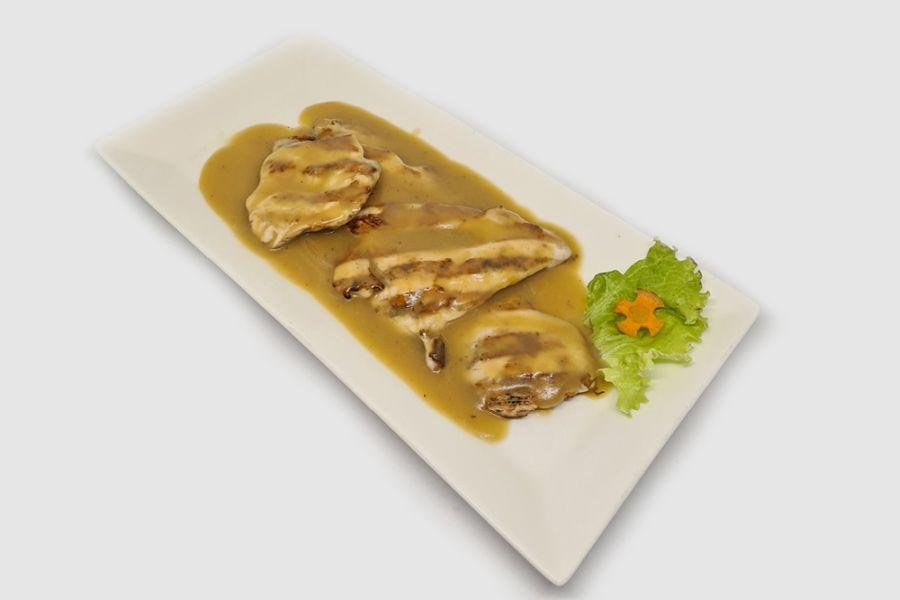

Hähnchen-Kavarma
Hähnchen-Kavarma
Gedünstetes Hähnchen mit Zwiebeln, Paprika und Gewürzen im Tontopf.
0.400 кг / 13.80 лв
Schweine-Kavarma
Aromatisches Schweinefleisch mit Gemüse und Gewürzen.
0.400 кг / 13.80 лв

Hähnchenfilet mit Bohnen
Gegrilltes Hähnchen mit weißen Bohnen nach bulgarischer Art.
0.350 кг / 15.90 лв
Schweinefleisch mit Bohnen
Geschmortes Schweinefleisch mit Bohnen.
0.350 кг / 15.90 лв
Käse nach Shopski-Art
Gebackener Käse mit Tomate, Ei und Gewürzen im Tontopf.
0.350 кг / 9.90 лв
Hähnchen-Burger mit Pommes
Saftiger Hähnchen-Burger mit knusprigen Pommes.
0.500 кг / 14.00 лв
Schweine-Burger mit Pommes
Gegrillter Schweine-Burger mit Pommes.
0.500 кг / 14.00 лв
Rindfleisch-Burger mit Pommes
Klassischer Rindfleisch-Burger mit Pommes.
0.500 кг / 14.00 лв
Vegetarischer Burger mit Pommes
Gemüsepatty mit Beilage aus Kartoffeln.
0.500 кг / 13.80 лв
Natur-Omelett
Locker geschlagenes Omelett aus frischen Eiern.
0.300 кг / 7.00 лв
Zusätzliche Zutaten (optional)
+ Gelber Käse — 0.050 kg / 1.20 lv
+ Weißkäse — 0.050 kg / 1.20 lv
+ Speck — 0.050 kg / 2.00 lv
+ Schinken — 0.050 kg / 2.00 lv
+ Pilze — 0.050 kg / 1.20 lv
+ Gemüsemix — 0.050 kg / 1.20 lv
+ Lukanka — 0.050 kg / 2.00 lv
+ Ei — 1 Stk / 1.60 lv
Добавки (по избор)
+ Кашкавал — 0.050 кг / 1.20 лв
+ Сирене — 0.050 кг / 1.20 лв
+ Бекон — 0.050 кг / 2.00 лв
+ Шунка — 0.050 кг / 2.00 лв
+ Гъби — 0.050 кг / 1.20 лв
+ Микс зеленчуци — 0.050 кг / 1.20 лв
+ Луканка — 0.050 кг / 2.00 лв
+ Яйце — 1 бр / 1.60 лв
Добавки (по избор):
+ Кашкавал — 0.050 кг / 1.20 лв
+ Сирене — 0.050 кг / 1.20 лв
+ Бекон — 0.050 кг / 2.00 лв
+ Шунка — 0.050 кг / 2.00 лв
+ Гъби — 0.050 кг / 1.20 лв
+ Микс зеленчуци — 0.050 кг / 1.20 лв
+ Луканка — 0.050 кг / 2.00 лв
+ Яйце — 1 бр / 1.60 лв
Englisches Frühstück
Wurst, Ei, Käse, Tomaten, Oliven, Toast.
0.600 гр / 19.90 лв